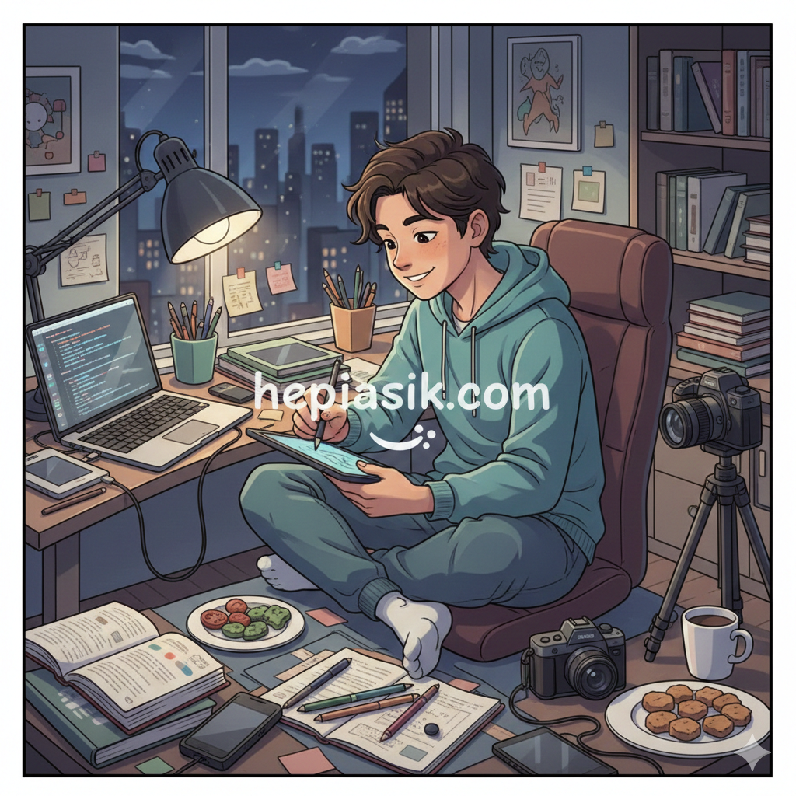

Cara Menghadapi Rasa Malas Menjadi Produktif Tetap Asik

Rasa malas sering dianggap sebagai musuh utama produktivitas. Namun, pendekatan modern dalam psikologi, neuroscience, dan manajemen energi menunjukkan bahwa malas bukanlah kegagalan karakter, melainkan sinyal biologis dan psikologis. Artikel ini membahas secara mendalam cara menghadapi rasa malas menjadi produktif tetap asik dengan pendekatan berbasis riset, buku otoritatif, dan praktik nyata yang dapat diterapkan tanpa harus memaksa diri secara berlebihan.
Dalam konteks kehidupan modern yang penuh distraksi, produktivitas tidak lagi sekadar tentang bekerja lebih keras, melainkan bekerja lebih cerdas. Seperti dijelaskan oleh Daniel Kahneman dalam Thinking, Fast and Slow (2011), otak manusia cenderung memilih jalur dengan konsumsi energi paling rendah. Rasa malas sering muncul ketika sistem kognitif kita merasa terbebani secara mental.
Memahami Rasa Malas dari Perspektif Ilmiah
Rasa malas bukanlah kondisi tunggal. Menurut Kelly McGonigal dalam The Willpower Instinct (2011), apa yang kita sebut malas sering kali adalah konflik antara sistem impulsif dan sistem reflektif di otak. Sistem limbik mencari kenyamanan instan, sementara prefrontal cortex berusaha menjaga tujuan jangka panjang.
“Self-control is not about saying no, but about understanding why you say yes.” – Kelly McGonigal (2011)
Riset dari American Psychological Association (apa.org) menunjukkan bahwa kelelahan mental, kurang tidur, dan stres kronis secara signifikan menurunkan kapasitas motivasi. Oleh karena itu, langkah awal dalam cara menghadapi rasa malas menjadi produktif tetap asik adalah mengubah cara pandang: malas bukan musuh, melainkan indikator.
Produktivitas Bukan Tentang Disiplin Besi
Cal Newport dalam Deep Work (2016) menegaskan bahwa produktivitas berkualitas tinggi datang dari fokus mendalam, bukan jam kerja panjang. Banyak orang merasa malas karena terjebak dalam pekerjaan dangkal yang tidak bermakna.
Data dari Harvard Business Review (hbr.org) menunjukkan bahwa pekerja dengan otonomi tinggi dan tujuan jelas memiliki tingkat produktivitas 31% lebih tinggi dibanding mereka yang bekerja dalam tekanan konstan.
Dengan demikian, cara menghadapi rasa malas menjadi produktif tetap asik dimulai dengan mendesain ulang jenis pekerjaan yang kita lakukan, bukan hanya menambah daftar tugas.
Peran Dopamin dan Motivasi Alami
Dalam Drive (2009), Daniel H. Pink menjelaskan bahwa motivasi intrinsik digerakkan oleh tiga elemen: otonomi, penguasaan, dan makna. Ketika aktivitas tidak memenuhi ketiganya, otak menolak dengan rasa malas.
Riset neuroscience dari Nature Neuroscience menunjukkan bahwa dopamin tidak hanya dilepaskan saat mencapai tujuan, tetapi juga saat mengantisipasi kemajuan. Inilah mengapa memecah tugas besar menjadi langkah kecil terasa lebih “asik”.
Membangun Sistem, Bukan Mengandalkan Mood
James Clear dalam Atomic Habits (2018) menekankan bahwa perubahan berkelanjutan datang dari sistem yang baik, bukan motivasi sesaat. Rasa malas sering muncul ketika sistem kerja terlalu bergantung pada suasana hati.
“You do not rise to the level of your goals. You fall to the level of your systems.” – James Clear (2018)
Dengan membangun kebiasaan mikro, cara menghadapi rasa malas menjadi produktif tetap asik dapat diwujudkan tanpa tekanan berlebih. Prinsip ini juga sejalan dengan BJ Fogg dalam Tiny Habits (2019).
Mengelola Energi, Bukan Waktu
Tony Schwartz dan Jim Loehr dalam The Power of Full Engagement (2003) menyatakan bahwa energi, bukan waktu, adalah mata uang utama performa tinggi. Rasa malas sering kali muncul karena energi fisik, emosional, atau mental yang terkuras.
Laporan dari Sleep Foundation menunjukkan bahwa kurang tidur menurunkan fungsi eksekutif otak hingga 40%. Oleh karena itu, tidur, nutrisi, dan jeda aktif adalah bagian integral dari produktivitas.
Mengubah Produktivitas Menjadi Aktivitas yang Menyenangkan
Ali Abdaal dalam Feel-Good Productivity (2023) menekankan bahwa kesenangan bukan musuh produktivitas, melainkan bahan bakarnya. Ketika pekerjaan dirancang agar selaras dengan rasa ingin tahu dan nilai pribadi, rasa malas berkurang secara alami.
Konsep ini sejalan dengan Mihaly Csikszentmihalyi dalam Flow (1990), di mana kondisi flow tercapai saat tantangan dan kemampuan berada dalam keseimbangan.
Keselarasan Jangka Panjang: Produktif Tanpa Kehilangan Makna
Viktor Frankl dalam Man’s Search for Meaning (1946) menegaskan bahwa manusia mampu bertahan dan bertindak efektif ketika menemukan makna dalam apa yang dikerjakannya. Rasa malas kronis sering kali merupakan gejala kehilangan makna.
Dengan menyelaraskan tujuan pribadi, nilai hidup, dan sistem kerja, cara menghadapi rasa malas menjadi produktif tetap asik bukan hanya solusi jangka pendek, tetapi transformasi gaya hidup yang berkelanjutan.